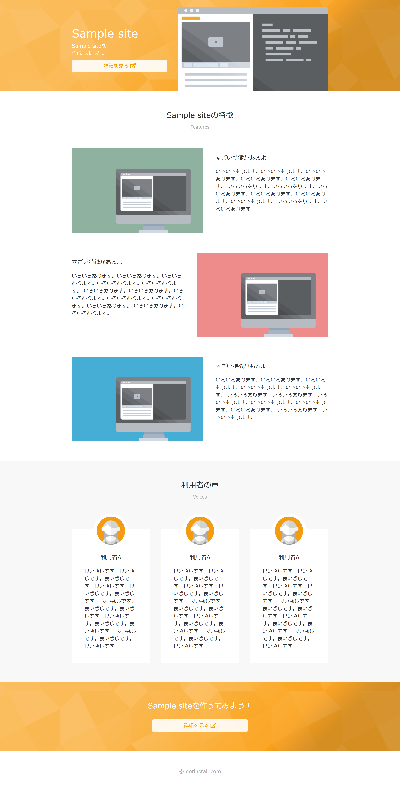
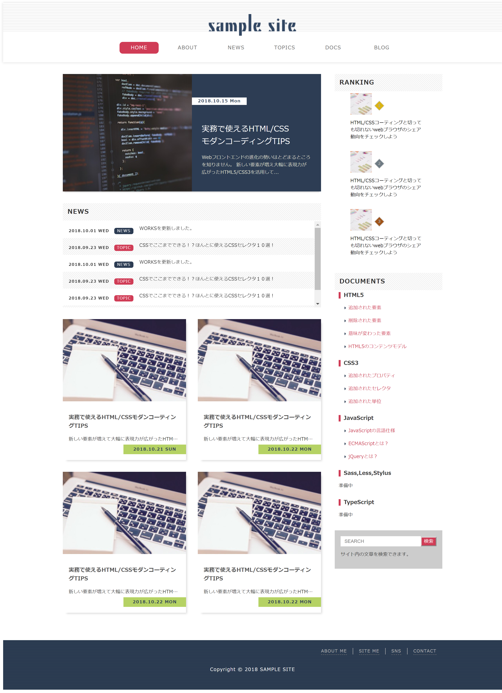
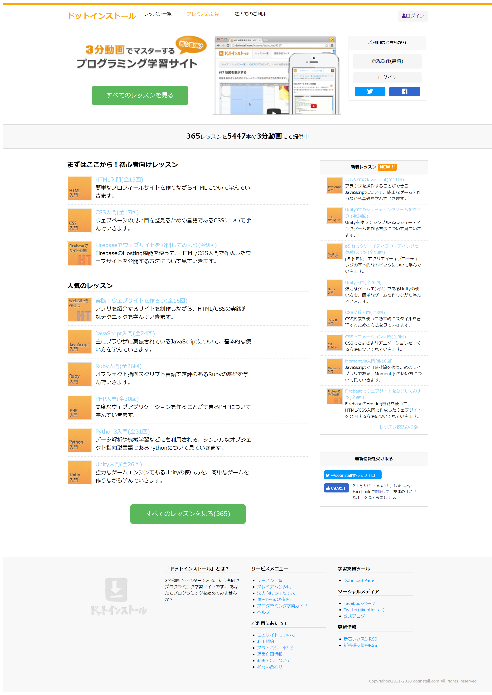
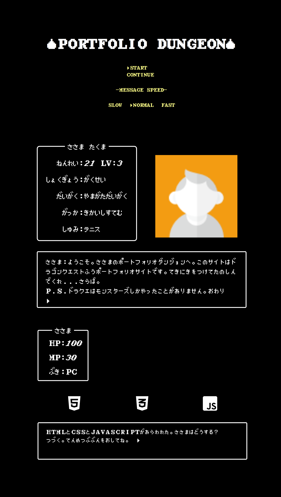
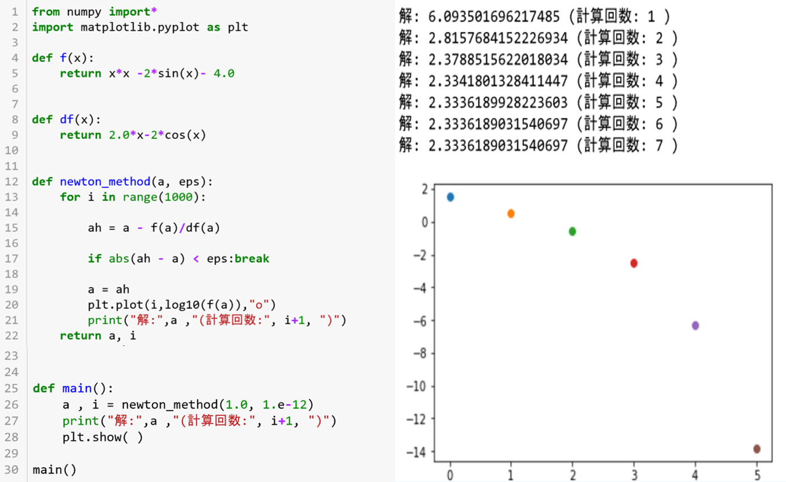

- 

- 
- 
- 
- 
1枚目のスライドは、ドットインストールの動画レッスンでのサイト模写です。基礎的な知識を確認するために模写しました。
使用言語はHTML/CSSです。
こちらから確認できます。
2枚目のスライドは、「HTML５/CSS３モダンコーティング」のグリッドレイアウト模写です。可変グリッドレイアウトライブラリやCSSアニメーションについて学びました。
使用言語はHTML/CSS/Javascript(Masonry)です。
こちらから確認できます。
3枚目のスライドは、「HTML５/CSS３モダンコーティング」のスタンダードレイアウト模写です。コーティングの基本的な決まり、書き方等を学びました。
使用言語はHTML/CSSです。
こちらから確認できます。
4枚目のスライドは、ドットインストールのサイト模写です。これは実際にあるサイトをソースコードを見ないで、自分のできる範囲(見た目のみ)で模写しました。
(今のサイトはリニューアルされて多少変わってしましました。)
使用言語はHTML/CSSです。
こちらから確認できます。
5枚目のスライドは、自分で考えて作成したサイトです。学んだ知識のアウトプット用に作りました。ドラゴンクエスト風に作ってみようと考え
jQueryを使ってテキストが1文字ずつ表示されるようなタイプライター風にすることにこだわりました。ポートフォリオサイトの予定でしたが途中です。
使用言語はHTML/CSS/Javascript(jQuery)です。※githubに載せたところエラーがでてしまっているため現在解決策を考えています。
6枚目のスライドは、大学の講義で作ったニュートン法のプログラムです。
ニュートン法とは方程式を近似的に解くアルゴリズムです。今回はx*x-2sin(x)-4=0の解を求めています。
Pythonに触れるのは初めてで知識もゼロのところからのスタートでしたのでネットで調べたり教わりながら作りました。
(初めてPythonの英語の論文を読んだときはプログラミング言語だとは知らずにニシキヘビと間違えて訳して読んでいました笑)
ネットにあるプログラムと全く同じものではなく、独自性を出したく出力結果をグラフにプロットするようにしました。
x軸はiの値[回数]、y軸はlog10(f(a)の値[誤差]です。誤差がある数値以下[e-12]になるとそこでプログラムが終了します。
使用言語はPythonです。